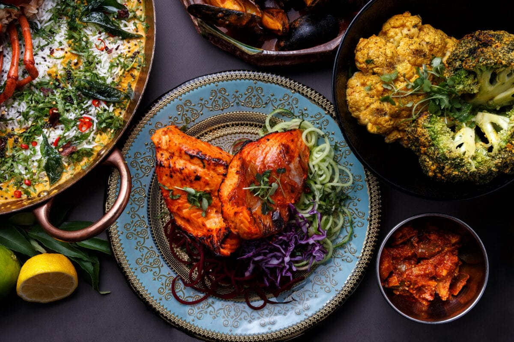

/56 Rabaul Road
Georges Hall, NSW 2198
(off Henry Lawson Drive)
Seafood & grill on the banks of the Georges River

Welcome to Aquarius Seafood Restaurant, where gastronomic excellence meets the bountiful treasures of the ocean. Nestled in the heart of the city, our seafood restaurant in Sydney is renowned for its commitment to serving the freshest, most exquisite seafood dishes. As the best seafood restaurant Sydney, we hold a team of talented chefs, impeccable service, and a charming ambience. We promise an unparalleled dining experience for seafood enthusiasts and culinary connoisseurs alike.
At Aquarius Seafood Restaurant, we believe that the best seafood in Sydney begins with the finest ingredients. We source our seafood meticulously, ensuring that every dish is crafted with the utmost care and attention to detail. From succulent lobster and melt-in-your-mouth scallops to delicate oysters and tender fish fillets, our seafood restaurant in Sydney offers a diverse selection to tantalize your taste buds.
Indulge in the ultimate gastronomic experience with our best seafood platter in Sydney. Savour a symphony of flavours from the deep blue sea, meticulously curated to satisfy your cravings. Dive into the best seafood buffet Sydney which includes a generous medley of fresh, succulent prawns, tender lobster tails, mouthwatering crab legs, and perfectly grilled fish fillets. Accompanied by a tantalizing array of dipping sauces and served with a side of seasoned vegetables, our seafood platter Sydney is a feast for the senses. Immerse yourself in a culinary adventure and discover the unparalleled taste of the ocean, all in one irresistible platter. Come, join us in our Georges Hall seafood and let your taste buds embark on a voyage of pure indulgence!

All Kids Meals come with a complimentary ice cream with a choice of chocolate or strawberry topping